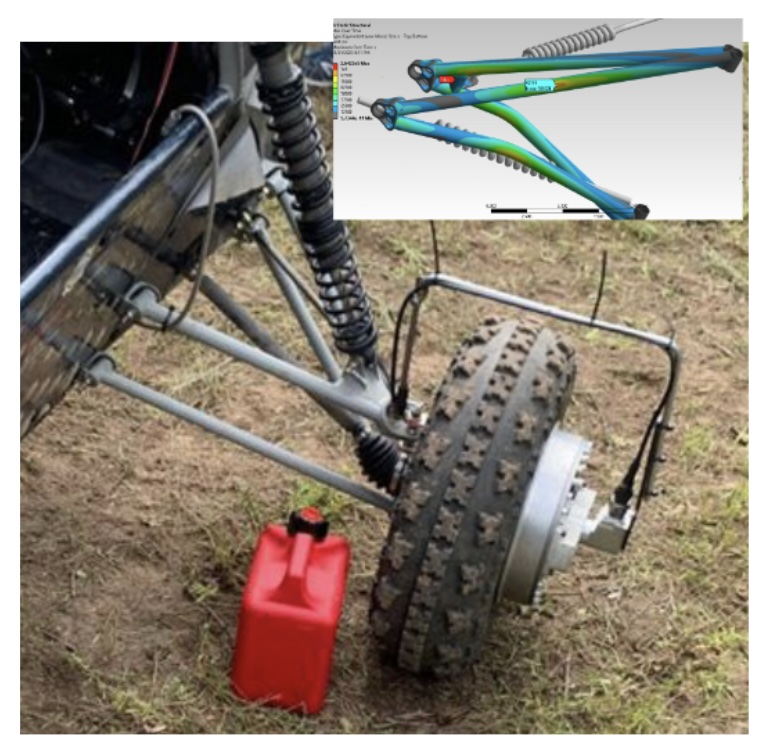

01 / Research / structural & optical engineeringAug 2026 – present
Trinity Neutrino Observatory
Modular telescope CAD, Python stiffness-matrix modeling, Monte Carlo optical sensitivity, ANSYS cross-checks and field operations.
Read case studyGeorgia Tech · B.S. Mechanical Engineering
I'm Alexander Guido, a mechanical engineering student and mathematics minor working at the intersection of structural analysis, vehicle design, experimental physics and hands-on prototyping.
I turn physical requirements into CAD, use analytical and computational models to make design decisions, and bring those decisions back to the shop or lab to test them.
Selected engineering work
Modular telescope CAD, Python stiffness-matrix modeling, Monte Carlo optical sensitivity, ANSYS cross-checks and field operations.
Read case study
A-arm geometry, governing impact loads, double-shear joint sizing, a manufactured shock reducer and structural FEA.
Read case studyCompetition robot integrating drivetrain, compliant mechanisms and solenoid actuation; requirements, tolerance analysis and failure-driven iteration.
Read case study
Hand-built hoverboard-motor turbine with PVC rotor assembly, preliminary blade CFD and measured continuous output of 15–20 W.
Read case studyEngineering approach
I care about how a model informs the next design decision, not simply producing a stress plot or a finished CAD assembly.
More about my backgroundMy design process
Research & experience